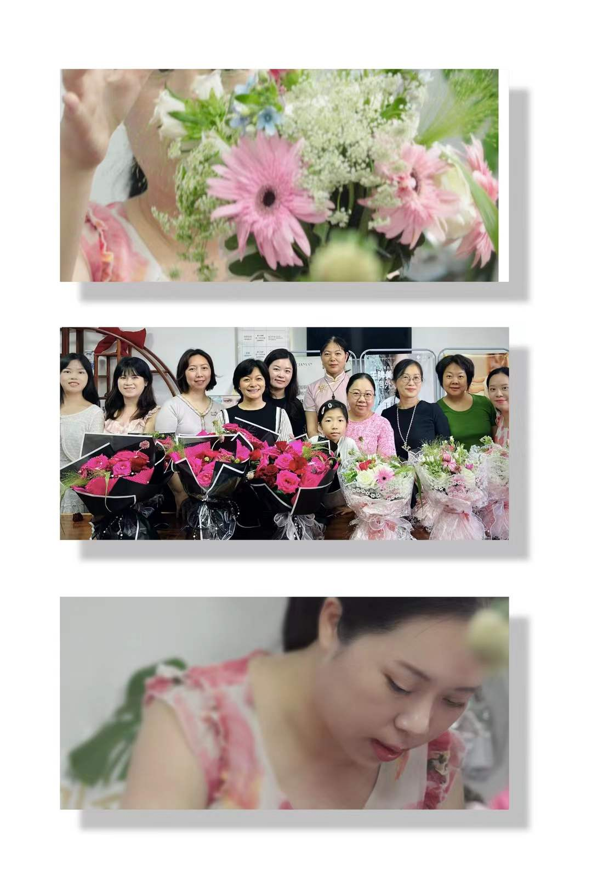
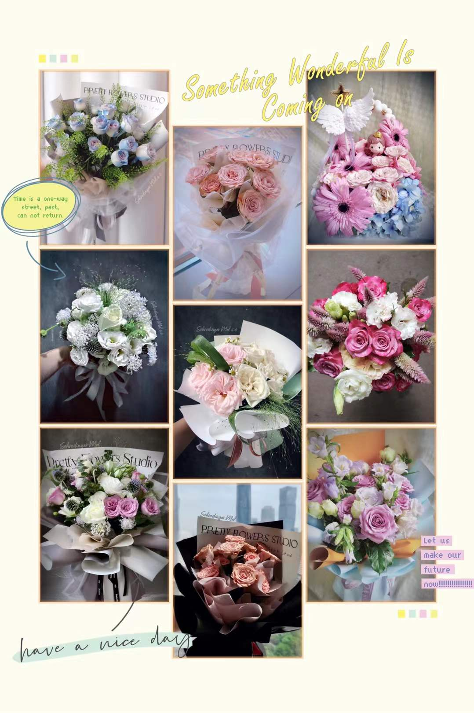

翻译现场
翻译不是只在咨询室。从社区到学校，从热线到花艺沙龙，每一次相遇，都是一次翻译的机会。我把孩子的需求翻译给家长，把家长的苦心翻译给孩子，把社会的善意翻译给需要的人。
🏠 社区关爱活动 查看详情 →
翻译角色：翻译不同年龄层彼此理解的需求

2014年10月
海珠区江南中街道

2016年9月
荔湾区华林街道

2017年10月
海珠区江南中街道

2018年10月
蒋光鼐小学


🎯 生涯规划活动 查看详情 →
翻译角色：把孩子的梦想翻译给家长，把家长的担忧翻译成孩子能接受的建议

2022年4月
华南师范大学附属中学

2024年4月
暨南大学

2024年
广州中学

2024年7月
广州市第一中学


💐 花艺减压沙龙 查看详情 →
翻译角色：把说不出口的情绪翻译成美丽的作品

2024年6月
金碧花园

2024年9月
珠江新城

2025年3月
珠江新城
📞 华南师大"心晴热线" 查看详情 →
翻译角色：把求助者的困惑翻译成他们能理解的答案
翻译情绪的作品
错过花艺沙龙的朋友，看看我把情绪翻译成了什么
翻译美好的镜头
那些我用镜头捕捉的翻译时刻